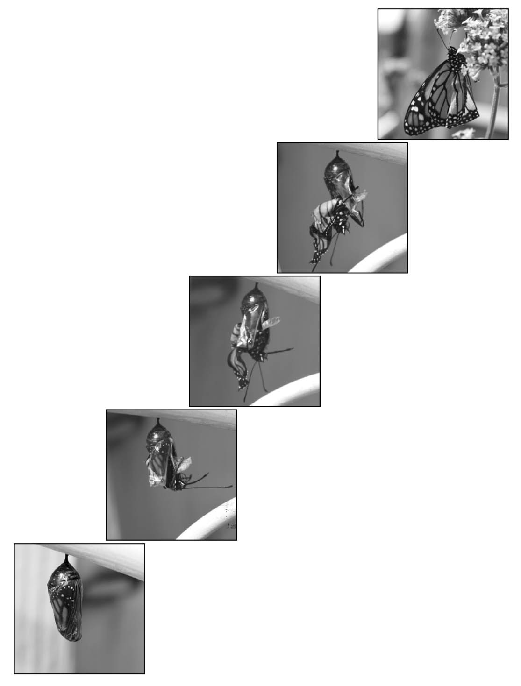

As I unlocked the polished white door of my hotel room, I recited the inscribed jet-black lettering that read: "June 12th, Procession of the Unmarried Woman. In which single women walk through the centre of their village looking for a husband. (Palestrina, Italy.)" I felt obligated to check the calendar. Yes, indeed it was June 12th. On an afternoon that supplied an abundance of heavy, dark clouds pregnant with moisture, I had set out on a solo journey to navigate a foreign railway system determined to find my own way to the city. I asked the universe “..please show me some signs to follow…” In retrospect, that fine lettering seemingly indicated the type of day it had been.
Months before, I began selling my belongings; furniture, knick knacks, dishes, paintings and more. I left behind the city apartment which I had called home for 14 years and started my journey to be with my partner of 5 years in his beautiful European country. Too soon after arriving, I found myself on a plane returning to the States. These events would prove to be the pivotal moments for my individualized catalyst of change.
Being an artist, photographer and devoted dream journalist, I had always considered myself to be moderately skillful at recognizing dreamscape symbolism. Admittedly I am not an expert interpreter, but I consider myself capable of identifying their appearances and working with them. As I wandered my way back to the States, uncertain of any predetermined destination, it felt natural to ask my dreams for guidance. My dreams had been my constant friends in the past, but now I was depending on them.

Thin Veil of a Butterfly
I dream of being wrapped in thin silk from head to toe. It is wrapped around my legs and arms, quite difficult to move. I wiggle my arms above my head and push my hands outward against the silk. Through its transparency I am able glimpse a view to a new world…
7/12/10
A Visit to the Butterfly Garden
It was my second visit to the garden nursery in Rhode Island. The warm, milky sunshine and abundance of flora provided a sweetly scented backdrop to what would be the beginning of an ongoing and wondrous experience in synchronicity. With my camera strapped around my neck, I walked upon a pebbled walk-way through a beautiful butterfly garden. Like fidgety toddlers, the butterflies were not behaving and refused to sit for the portraits I longed to take. Rarely would they land on a flower and if they did it was never long enough to catch their image. I shook my head with impatience and was ready to put my camera away.
From the corner of my eye I caught sight of a grey-blue painted, metal chair sitting alone at the corner of the garden. Delicately dangling from the curved edge of the chair was the chrysalis of a Monarch butterfly. It captivated me, those fine details of tightly folded orange and black wings that could be seen through the translucent casing. As I gazed upon it, my dream from earlier that month immediately entered my consciousness. I became the solitary cheerleader for the emergence of this little creature. I stayed with the Monarch for over 45 minutes as it struggled from its outer shell. In my mind I heard unspoken words “You cannot rush a butterfly,” nor can you help it break free of its cocoon, otherwise the risk exists of damaging delicate wings. I simply watched and waited patiently while I slowly snapped photographs of the small miracle unfolding before my eyes.
A Visit to the Consignment Store
After arriving in the heart of the Blue Ridge Mountains, I was introduced to a lovely little consignment store. Nestled among four butterfly dessert plates was Jung’s book Synchronicity. Having never read it before, I purchased it, thinking: “Well isn’t that a nice coincidence!” Little did I know that this synchronicity of change and butterflies was still in play.
8/24/2010
The Mountain Top
I drove with my car windows down to an overlook pass on the top of Buffalo Mountain, my camera and Jung’s Synchronicity on the passenger’s seat. I parked my car and grabbed my newly purchased book. It was at that moment a lemonade-yellow butterfly fluttered in through the passenger side window, landed on my arm for a few moments, and then flew out the driver’s side window. My internal dialog asked: Is this a dream? Am I awake? And my inner voice answered my question with another question: Does it make a difference? I decided to simply be moved with the moment, enjoy the metaphor, the beauty, the symbolism, and just become present with the experience. I followed the flight pattern of this single yellow butterfly as it landed on a group of soft-purple milk thistles. Then I watched in awe as at least a dozen more multi-colored butterflies of various species began landing on the flowers surrounding it; each one, carried by the soft wind, landing right before my eyes. Among the many there was a Monarch with its recognizable markings, a deep black butterfly with metallic blue luminescence spotted with pumpkin orange and white droplets, a butterfly speckled with colors of curry and saffron, and my special lemonadeyellow butterfly sitting tall on the highest thistle. Softly and gently they went about their daily business of sipping nectar and picking up pollen, each pausing briefly on the tips of the thistle. I stood alone for an hour on top of the blue-green mountain with only the butterfly-party as my company as I captured their images.
8/25/2010
So how do I define the butterfly experience? Great question. I had been navigating without a map for several weeks, asking the universe to provide guidance, some signs about the path I am on; provide some sort of divine inspiration I could draw upon. And in response, my dreams answered as did the collection of “coincidences” happening with my eyes wide open.
The continuing butterfly events were dreamlike and awe-inspiring. With my camera I have been intentionally, physically and symbolically “shifting my focus.” My 20/10 eyesight provides minor details at great distance on the horizon, but in doing that so frequently, I often fail to see what’s right in front of my eyes. What I had been doing is purposefully noticing and appreciating the finer details.
This series of experiences not only raised the bar but it shifted it as well. It triggered a new awareness from within, and united it with a new appreciation for symbols and synchronicities. Just as I am capable of interpreting the metaphors and symbols that dreams provide, the time has come to start acknowledging and working with the signs and symbols while awake. Quite possibly, this is what it is all about. Shifting focus to see the microcosm, the macrocosm, the foreground, the background, connecting it all and being open to “seeing” it all, including the coincidences that thread it all together.
I will openly embrace synchronicities that may unfold in both future waking and sleeping dreamscapes, for I know that my personal transformation is not over. You cannot rush a butterfly. ∞